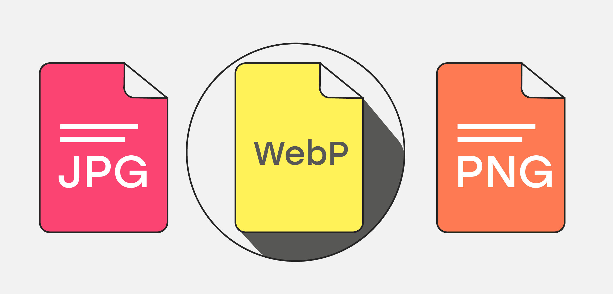
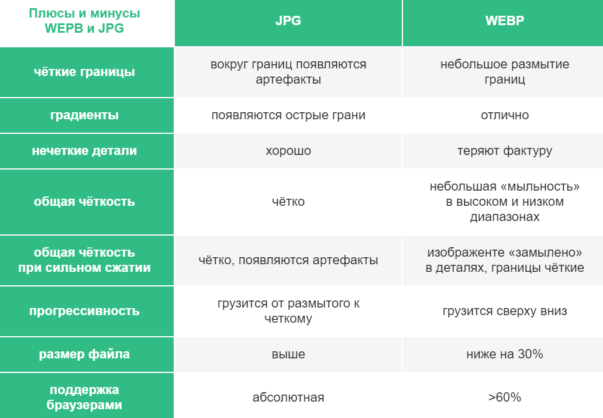

Формат изображения WebP . Достоинства.Недостатки.Сравнения.
 WebP — это формат файла, разработанный компанией Google в 2010 году.
Его особенностью является продвинутый алгоритм
сжатия, позволяющий сократить размер картинки без видимых потерь в качестве.
В среднем вес картинок сокращается на 25–35% ,
что позволяет вебмастерам размещать на сайтах больше изображений,
не тратя
впустую драгоценное пространство на
жестком диске арендованного VDS.
Преимущества WebP над другими форматами
Естественно, основное преимущество — это размер. Сокращение размера положительно
влияет сразу на четыре аспекта работы в
интернете:
- Сайты со сжатыми WebP-картинками работают быстрее. Уходит меньше времени на
обработку небольших файлов. Даже если в статье будет под сотню изображений,
компрессия спасет от чересчур долгих загрузок. - Загружая на
VDS
маленькие изображения, можно сэкономить на пространстве жесткого диска. - Пользователи будут тратить меньше мобильного трафика при посещении сайта со смартфона.
- Выделенный интернет-канал до сервера будет загружен гораздо меньше, если передаваемый
медиаконтент меньше весит. Еще один плюс к производительности.
Недостатки формата WebP
- Формат поддерживают не все браузеры
- При сжатии с потерями изображение может выглядеть плоским
- В пиксельной графике может потеряться часть цветов
Jpeg против WebP
JPEG>
— формат, отлично подходящий для изображений с большим количеством цветов. Он
мало весит и имеет приемлемое
качество, из-за чего обрел столь большую популярность
среди пользователей.
На первом изображении много одноцветных мест, поэтому WebP
"Jpeg"
выдают одинаковое качество.
WebPуступает
Jpegиз-за белых тонов, при равном размере.
Дополнительно выявленные плюсы и минусы форматов
Выводы
После сравнения становится ясно, что формат изображений WebP
имеет немало положительных отличий,
но также достаточное количество отрицательных сторон в сравнений с другими форматами изображения.
По-моему мнению, каждый пользователь должен выбирать сам, каким форматом изображений пользоваться.